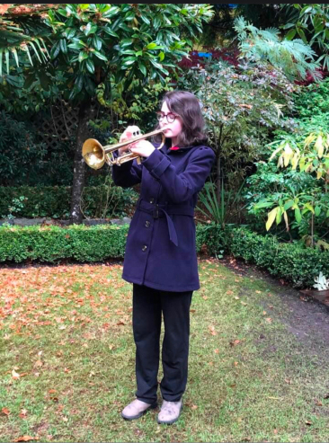

When I'm not learning about design, I enjoy playing music, singing in choirs, knitting, and crocheting. I have been playing the french horn for eight years, and the trumpet for seven. I currently sing in a community choir and a chamber acapella choir. Over the past few years, I have made scarves, hats, shawls, dishcloths, pincushions, and stuffed animals. I enjoy utilizing my creativity in a multitude of ways.
